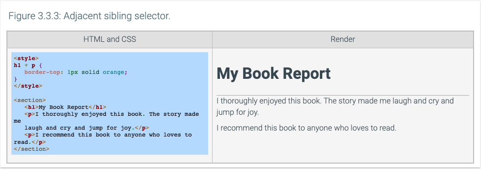
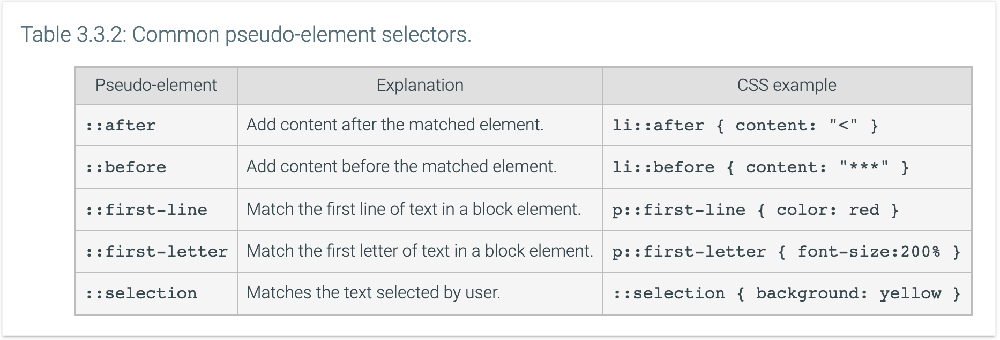

3.3 Advanced selectors
Universal selector
The universal selector, specified using an asterisk character (*), matches all elements in the web page. The universal selector is implied when an element name is not specified. Ex: The CSS selectors .highlight and *.highlight match exactly the same elements, where the universal selector is implied in .highlight and explicit in *.highlight.
The multiple selector, specified using a comma (,) to separate selectors, matches all listed elements to apply a style rule. Ex: The figure below shows two CSS examples that apply the same styles to <ol> and <ul> elements. The CSS on the left unnecessarily duplicates the styling declarations for <ol> and <ul> elements, whereas the CSS on the right uses a single style declaration using a multiple selector.

Child selector
The child selector, specified using a greater than character (>) between two selectors, matches any elements where the second element is a direct child of the first element. The child selector is similar to the descendant selector (space between selectors), but the matching child element in the child selector must be a direct descendant of the matching parent element.

Sibling selectors
Sibling elements are elements that share the same parent element. The general sibling selector, specified using a tilde character (~) between two selectors, matches the second element if the second element occurs after the first element and both elements are siblings. Any number of other elements can be placed between two general sibling elements. In the example below, the heading and the paragraphs are children of the section element. Consequently, the two paragraphs are both general siblings of the heading element.
The adjacent sibling selector, specified using a plus character (+) between two selectors, matches an element that immediately follows another element, where both elements have the same parent. Ex: The adjacent selector h1 + p in the figure below matches the first paragraph immediately following the <h1> header element, where both the paragraph and heading are siblings of the section element.

Attribute selector
The attribute selector, specified with an attribute name and optional value comparison enclosed in square brackets ([ and ]), matches elements with the specified attribute or the specified attribute and value. Ex: a[target] selector matches anchor elements with a target attribute specified. The attribute selector can be more specific by matching elements with attributes having a specific value. Ex: a[target="_blank"] attribute selector matches anchor elements with a target attribute value of _blank.
Pseudo-element selector
The pseudo element selector, specified with two colon characters (::) followed by a pseudo-element, matches parts of elements. The pseudo-element selectors allow styles to apply to the first line or first letter of text of an element or to text that is selected by the user, or allow additional content to be inserted before or after an element.
